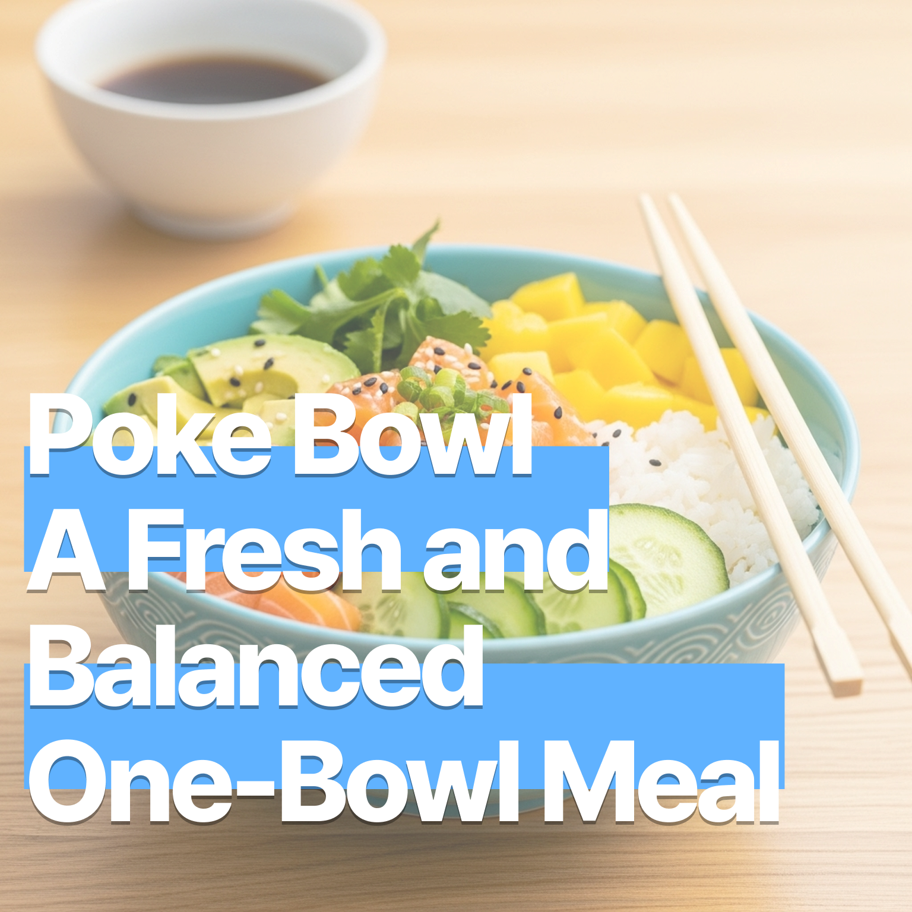

포케볼 – 신선함과 균형의 한 그릇
2025-07-11

포케볼 – 신선함과 균형의 한 그릇
포케볼(Poke Bowl)은 하와이에서 유래한 요리로, 생선회와 밥, 다양한 채소와 소스를 한 그릇에 담아낸 건강하고 다채로운 식사입니다. 아래는 집에서도 간편하게 만들 수 있는 연어 포케볼 레시피예요.
🛒 재료 (2인분 기준)
- 초밥용 연어(사시미급) 200g → 생선을 사용할 때는 반드시 신선한 사시미용 연어를 구매하고, 위생적으로 다루어 주세요.
- 밥 2공기 (자스민 또는 초밥용 쌀)
- 아보카도 ½개
- 오이 ½개 (슬라이스)
- 망고 ½개 (깍둑썰기)
- 무순 또는 어린잎 채소 한 줌
- 김 또는 김스낵 1장
- 피클 생강 약간
- 래디쉬 2개 (슬라이스)
- 검은깨 또는 흰깨 약간
🥣 연어 마리네이드 소스
간장 2큰술, 참기름 1작은술, 라임즙 또는 식초 1작은술, 꿀 또는 설탕 ½작은술, 다진 마늘 ½작은술, 고춧가루 또는 칠리 플레이크 약간 (선택)
Tip: 연어는 마리네이드 소스에 버무려 냉장고에서 15~30분간 재워주세요. 너무 오래 재우면 식감이 물러질 수 있으니 주의하세요.
🌶️ 매운 마요네즈 소스 (선택)
마요네즈 2큰술, 스리라차 소스 1작은술, 꿀 또는 레몬즙 약간 → 스리라차 소스 양은 매운맛 강도에 따라 가감하세요.
🍚 초밥식초 만들기 (선택)
식초 2큰술 + 설탕 1큰술 + 소금 ½작은술 → 따뜻한 밥에 살짝 섞어주면 밥이 더 감칠맛 나고 포케볼에 잘 어울려요.
🍳 조리 방법
- 연어 손질 및 마리네이드
연어는 껍질과 뼈를 제거하고 깍둑썰기합니다. 마리네이드 소스를 섞어 연어에 버무린 뒤 냉장 보관합니다. - 밥 준비
밥은 따뜻하게 준비하고, 원한다면 초밥식초를 살짝 섞어 풍미를 더합니다. - 채소 손질
오이, 망고, 래디쉬, 아보카도는 비슷한 크기로 썰어 플레이팅이 예쁘고 먹기 편하게 준비합니다. 무순은 씻어 물기를 제거하고, 김은 잘게 찢어둡니다. - 플레이팅
넓은 그릇에 밥을 깔고, 마리네이드한 연어를 중심에 올립니다. 주변에 채소와 과일을 균형 있게 배치하고, 김과 피클 생강을 곁들입니다. 원한다면 매운 마요네즈 소스를 뿌리고, 깨를 살짝 뿌려 마무리하세요.
💡 팁
- 대체 재료: 연어 대신 참치, 새우, 아보카도, 두부, 닭가슴살 등으로 다양하게 응용할 수 있어요.
- 밥 대체: 퀴노아, 콜리플라워 라이스를 사용하면 더 가볍게 즐길 수 있어요.
- 소스 다양화: 데리야끼, 폰즈, 와사비 마요 외에도 고추냉이 간장, 유자 폰즈, 허니 머스터드 등으로 개성 있게 즐겨보세요.